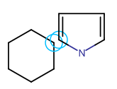
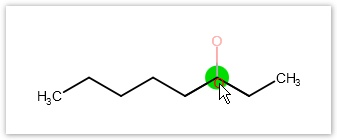
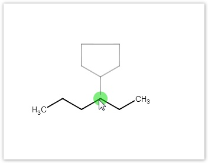
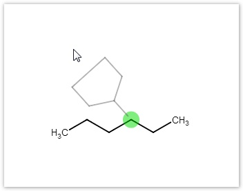
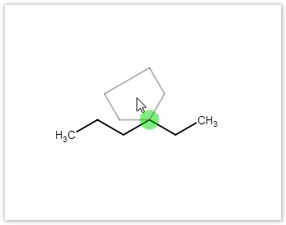
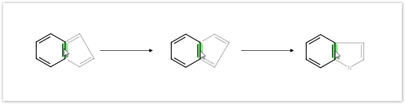

Marvin JS User's Guide
Table of Contents (Start)
Drawing Chemical Structures
Drawing atoms
You can choose from several options to draw a new atom or to modify an already existing one:
-
An atom can be inserted by using one of the most frequently used atom buttons on the Atoms toolbar. The chosen atom appears on the tip of the cursor and you can place it on the canvas with a left-click.
-
Any of the known elements can be selected from the Periodic Table , the button of which you can find on the Atoms toolbar. Choosing an element, its atomic symbol will appear on the tip of the cursor and you can place it on the canvas several times. At the same time, the Periodic Table window closes automatically.
-
Atoms can be placed on the canvas using the keyboard. By typing an atomic symbol, it will appear on the tip of the cursor, and can be placed on the canvas with a left-click or pressing Enter. Although they are not listed in the Periodic Table, deuterium and tritium symbols (D and T, respectively) can also be used this way.
-
When a non-metallic atom is placed on the canvas, it will be automatically completed with implicit hydrogens according to the free valences of the atom. Display of implicit hydrogens depends on the current option in the View Settings dialog box. Metallic elements are exceptions to this rule, they are added to canvas in zero oxidation state.
-
Atoms on the canvas can be replaced using either of the above mentioned methods. If you select several atoms at the same time, you can change them simultaneously using either the keyboard or the Periodic System.
-
Instead of standard atomic symbols, you can use any label for atoms by defining an atom alias in the Atom Properties dialog.
-
Query atoms can be part of molecules (query structures) as well. To use these atoms, select their combo button on the Atoms toolbar. Pseudo atoms, which stand for an "Any" type query atom, can also be created through this button: click on the "question mark" in the query atom list and define the label you want to use with your pseudo atom in the dialog then close the dialog with the "OK" button and click on the atom you want to change into a pseudo atom. Note that pseudo atoms can be defined in the Atom properties dialog, too. A special class of pseudo atoms are the Homology Groups, which are also available from the Atom properties dialog.
Drawing bonds
-
To create a chemical bond between two atoms on the canvas select the appropriate bond type using the Bonds combo button on the Tools toolbar, click on one of the two atoms, and drag the bond to the other atom.
-
Selecting a bond type and clicking or dragging the cursor on the canvas will create a new bond with the default length and with carbon atoms on both ends.
-
When a bond tool is active and the cursor is over an atom, a grey colored image of a bond in the selected type will appear, ended by a carbon atom. Pressing the Shift key will change the bond direction. Click on the atom will place the bond in this position. You can also draw a new bond by dragging from an already existing atom. Just like in the previous case, the length of the bond is the default value, and a carbon atom is on its other end.
-
Bond type can be changed by selecting the new bond type from the toolbar and clicking on the bond on the canvas. The bond type can be selected by typing the appropriate shortcut, too. If the cursor is over the canvas, typing a shortcut will select the appropriate bond mode (the Bonds button is activated). However, if the cursor is over an existing bond, typing a shortcut will modify the type of the given bond only. In this case the selected mode (the active button) will not change.
-
Note that repeated clicking on a bond will change its type depending on the currently active bond type. If the selected bond type is Single, successive clicks on a bond will change its type from single to double and vice versa. If Double bond type is selected, successive clicks on a bond will alternate its type between Double and Triple. Clicking on a directed bond (Single Up, Single Down, Single Up or Down, or Coordinate bond) will change the bond direction.
-
Drawing molecules can be made much faster by using the Drawing tool of the Bonds combo button. With this feature, you can create the framework of complex structures without releasing the mouse button. When you draw a bond, grey dots appear indicating potential directions for the next bond. In the default case, these dots are the vertices of a hexagon while they will be rearranged into a pentagon if you press down the Shift key. Dragging the cursor towards one of these dots, you can add a new bond to your molecule. While drawing a molecule, you can change the type of the last atom by typing a new atomic symbol. Clicking on a bond when the Drawing tool is active will change the bond type according to the Single-Double-Triple sequence.
|
|
|
|


-
When more than one bonds are selected in a structure, selecting a new bond type will change every selected bond.
Drawing a molecule
-
Molecules can be created by connecting atoms with different chemical bonds or with the use of templates from the Templates toolbar.
-
You can create alkyl or conjugated hydrocarbon chains of arbitrary length using the Chain button on the Tools toolbar. A chain can be created as a new molecule or it can start from an already existing atom on the canvas. After selecting the button you can draw the alkyl chain by dragging or clicking repeatedly on the starting atom. The length of the chain is shown on the tip of the cursor. During drawing, the new chain can be rotated around its starting atom to the desired orientation by dragging. You can create a conjugated polyene chain by pressing the Ctrl button when chain-drawing.
Marvin JS supports different substructure group (S-group) types:
-
Generic S-groups can be used in chemical structures, e.g., for visualizing solvent molecules or other compounds in a complex structure.
-
Predefined abbreviated groups can also assist you to create complex molecular structures. For selecting an abbreviated group, use the Abbreviated Groups button of the Tools toolbar. When a group abbreviation has been selected from the list of the appearing dialog box, you can decide whether to place it on the canvas in contracted or in expanded form. For the latter option set the Expand checkbox in the dialog. Closing the dialog with the "OK" button will place the group on the tip of the cursor, from where you can put it on the canvas with a left-click (connect it to an already existing structure or start a new molecule). Learn more about abbreviated groups and their handling.
Merging structures
In Marvin JS you can also merge separate fragments. Merging is helpful if you want to create ring systems (spiro, fused, or bridged ring systems: one, two, or more than two atoms in common, respectively) or to connect chain-like substructures. For merging two structures, one of them should be selected. When you hover the cursor over the selected fragment, the cursor will change to "move" type (crossed arrows) indicating that the fragment can be moved. Dragging the selected fragment until one or more of its atoms overlap with the "host" molecule atoms will merge the two structures.
Templates can also be merged with a molecule on the canvas. Choose a template from the and drag it close to the atoms of the existing structure. When the distance between them has become sufficiently small, the possible merging points will be indicated by purple circles. Release the mouse button will put the template in the merged position.
|
Spiro ring system |
Fused ring system |
|
 |
|

Sprout drawing
Single atoms can be connected to non-terminal atoms in a "sprouted" position. Select an atom symbol, hover the cursor over the atom to which you want to attach the new atom, and press the Shift key to see the result of sprouting. Click on the non-terminal atom to attach the new atom to it.

Templates can be connected to an atom with a single bond: select the template from the Templates toolbar and push the left mouse button on the desired atom to see a grey colored image of the template showing its would-be position. Drag the template closer to the atom if you want the template attach without a bond, and drag with the mouse away from the atom if you want the template sprouting from the atom. By dragging the template you can rotate the template around its attachment point. Releasing the mouse button will connect the template to the atom with a single bond(: one of the implicit hydrogens of the atom will be replaced by the template) or without a bond.



A template can be attached to an already existing bond which is about the same length as the template's bond: clicking on the bond connects the template to the selected bond. The template is rotated automatically in order to fit the chosen bond perfectly.
-
The side of the bond to place a template can be altered by dragging the template to the appropriate side.
-
When you press the left mouse button over a bond, pushing the Space key will rotate the template, so you can alter the orientation of it easily.
